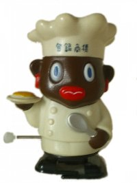
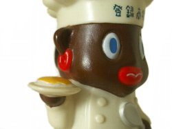
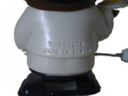
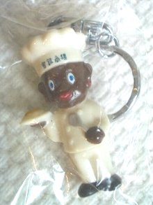
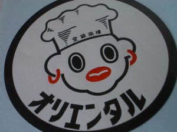
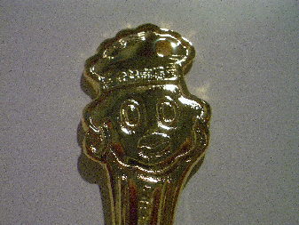
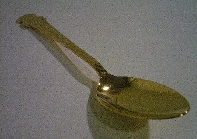

なないろまーぶる おまけコレクション
- なないろまーぶるTop
- >> Collection
- >> オリエンタルカレー
 |
 |
 |
オリエンタル坊やのとことこ人形
北原照久氏監修のｔoysclubで販売されていたようです。
このオリエンタル坊やのとことこ人形は、名古屋の
大須商店街で購入しました。大須商店街の近くに大須観音
があり面白い雰囲気なので、名古屋に行くことがあると行っています。
そこでたまたま見つけました。
全然関係ないですが、大須商店街にはおもちゃ屋さんとか
フィギュア屋さんとか古着屋さんが結構あります。
からくり時計などもあります。（本当に全然関係ないな〜＾＾；）
でも、おもちゃの掘り出し物などが見つかったりすることもあるので、
いつもなんだかんだで訪れてしまいます。


オリエンタル坊やのキーホルダー・ステッカー
キーホルダーとステッカー。オリエンタルで注文したカレーセットに入っていました。
キーホルダーとストラップが選べたのですが、何となくこれを選びました。
 |
 |
オリエンタルゴールドティースプーン
2002年「がっちりプレゼント」で当選した金のティースプーンです。
24金のメッキが施されています。
カレーの箱を開けたら当たり券が入っていました。
当たり券があるなんて知らなかったのでびっくりしました。
上に穴があります。キーホルダーやストラップに出来るそうです。
もったいないのでしていません。貧乏性。
そんな使い方、斬新ですね。実際された方はいるのだろうか・・・。
 |
 |
オリエンタルゴールドスプーン
「ゴールドスプーンプレゼントキャンペーン」で当選したスプーンです。こちらも24金のメッキが施されています。
この時一緒に同封されていた資料によると作られた時代によって30種以上あるそう。 一本5万円するスプーンもあるそうです。そんなスプーンでは、カレーは食べにくいなぁ。
 |
 |
オリエンタルカレースプーン
通常のスプーン。
カレーセットに入っていました。このスプーンでよくカレーを食べます。
最終更新日 2008.05.19
なないろまーぶるはYahoo!カテゴリに登録されています。